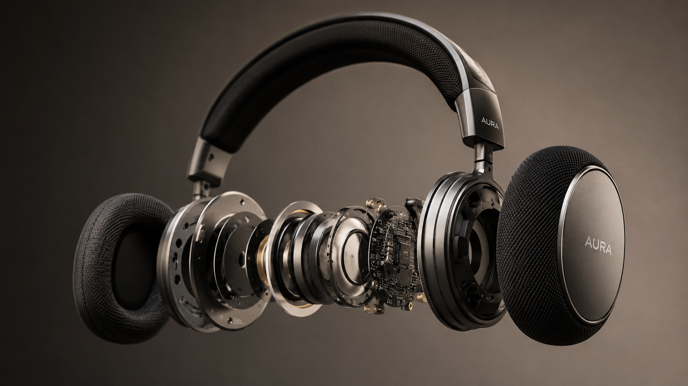
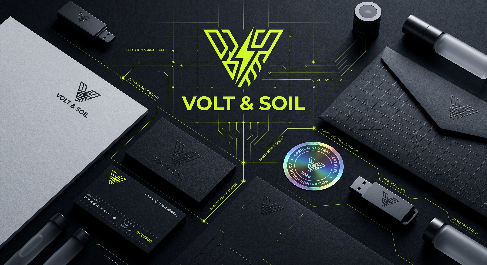
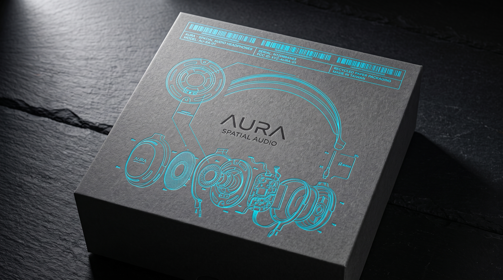

FEATURED WORKS // 6 大旗艦作品庫
6_FEATURED_CASES
Curated Portfolio Archive
Turning vision
into reality
through craft & motion.
精選 6 大跨領域商業實戰：包含 3D 空間聲學耳機系統、純素永續冷萃包裝、AI 協作平台深色 UI、Google Ads 轉化漏斗與手繪品牌識別。點擊卡片即可查看完整爆炸拆解圖與成效數據。
🔍 深度個案索引
✦ 01. AURA 空間聲學 (3D 爆炸拆解圖)
✦ 02. OAT 純素咖啡 (再生紙實體包裝)
✦ 03. NEXUS AI 平台 (曲面深色 UI 系統)

01 // BRAND & 3D
預購轉化率 +34.8%
AURA 空間聲學耳機系統 (Spatial Audio)
微工業機能美學：將聲學濾波器與微晶片轉化為品牌核心視覺資產，拒絕同質化科技極簡。

02 // D2C & PACKAGING
電商銷售提升 +38.6%
OAT & BOTANIC 純素冷萃低碳咖啡
未塗布再生紙盒與實體觸感包裝，融合低碳永續理念與 D2C 高轉化排版系統。

03 // SAAS & UI/UX
載入 1.1s | 轉化 +40%
NEXUS AI 模組化協作平台與動態介面
高密度資訊儀表板與節點式畫布系統，實現 100% Design-to-Code 先鋒落地。

04 // ADS & GROWTH
ROAS 4.8x | CPA -32%
HYDRATE LAB 全渠道廣告轉換漏斗
Google Ads 搜索廣告結合高轉換 Landing Page，完成從曝光到訂單的商業閉環。

05 // SEO & CONTENT
自然搜尋流量 +210%
CHRONO ARCHIVE 知識庫與 SEO 矩陣
結構化資料標記與長尾關鍵字內容工程，取得鐘錶領域搜尋前三名排名。

06 // IDENTITY & ART
社群互動 +185%
From Life To Lines 生活線條 品牌識別
以極簡線條與手繪筆觸傳遞情感共鳴，建立兼具商業力與靈魂的個人品牌。